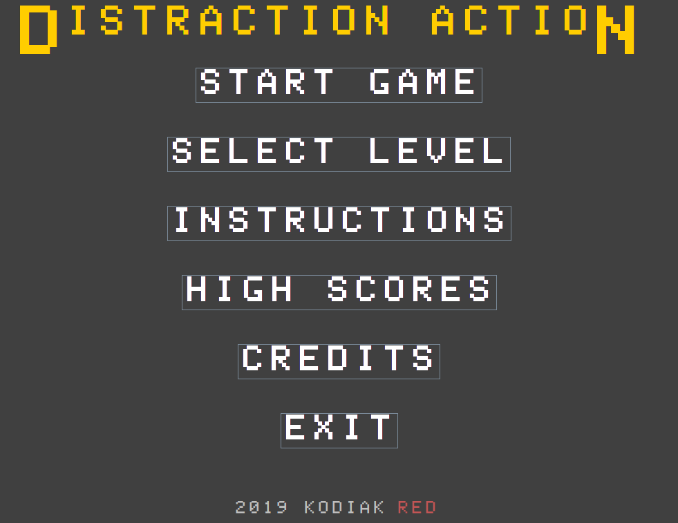
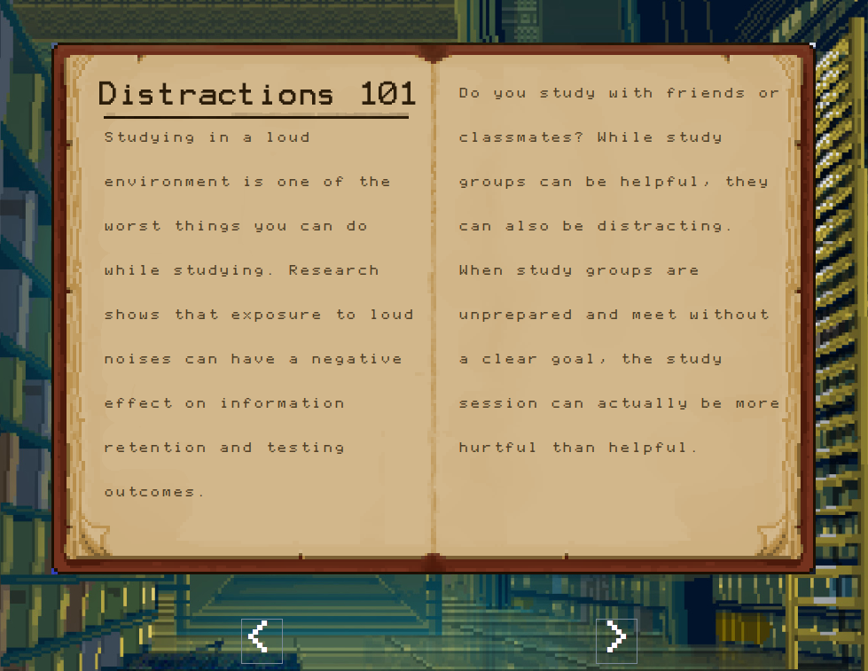
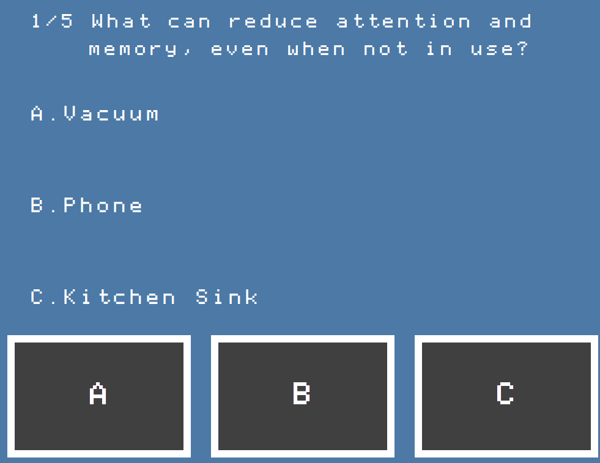
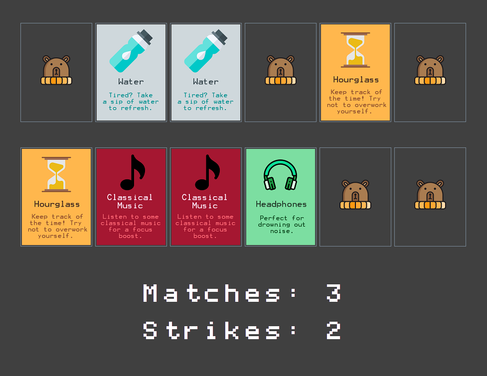
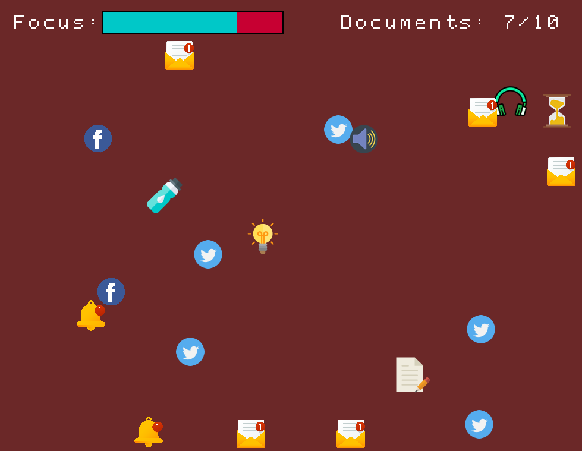

Distraction Action
Distraction Action was my final project for AP Computer Science. I created a company called Kodiak Red with a partner and made a game that teaches users how to avoid distractions when studying. The game has three different levels and was programmed in Java.
The Main Menu
Introduction: The Book
Level One: Quick Quiz
Level Two: Matching Mayhem
Level Three: Dodging Arena